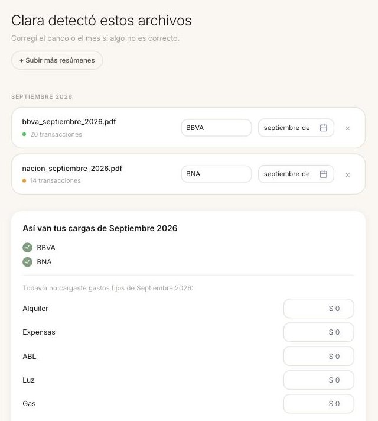
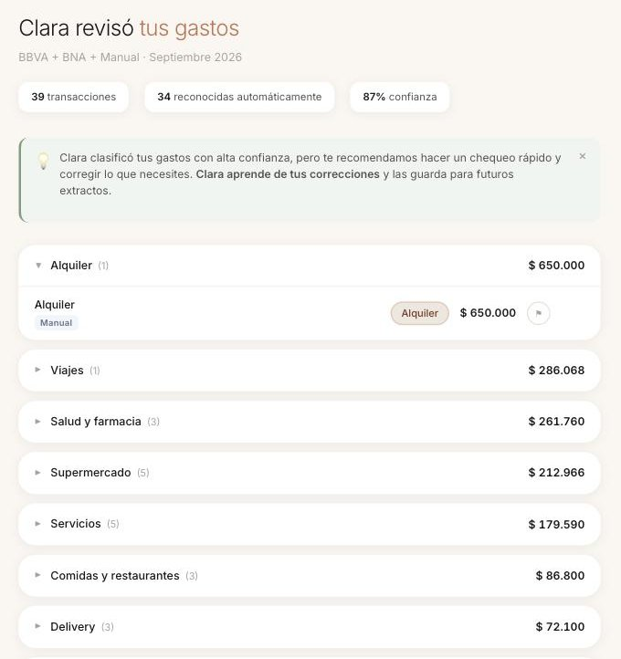
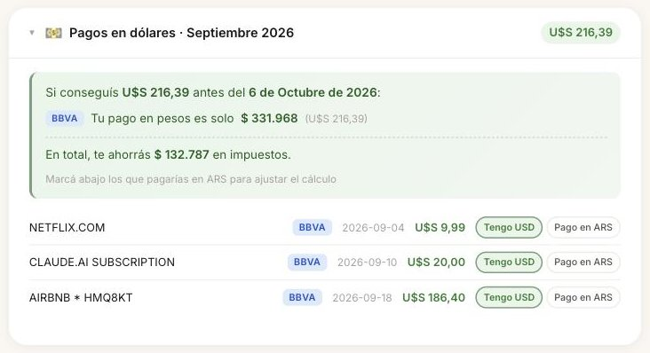
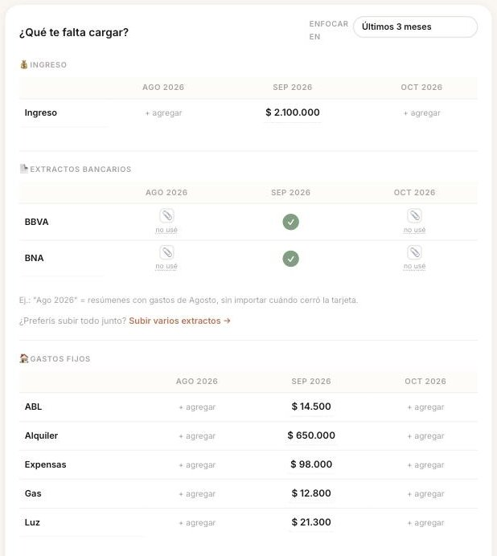
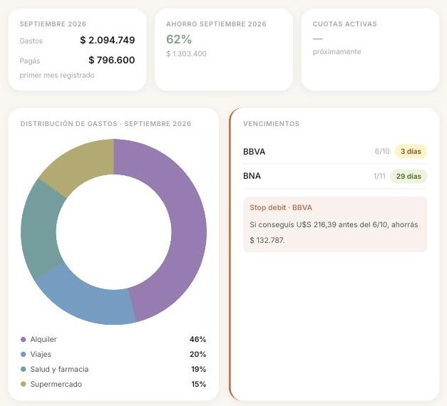

Clara
Una app de finanzas con IA que convierte los resúmenes desordenados de los bancos argentinos en finanzas personales claras.
Proyecto personal · Flask, Claude API
El problema
Los resúmenes de bancos y tarjetas argentinos llegan como PDFs sin un formato común, y la realidad local (el dólar MEP, los mismos comercios de siempre) rompe cualquier app de presupuesto genérica.
Qué construí
Una app web en Flask, hecha por mí desde cero a lo largo de varias sesiones. Lee los PDFs de los resúmenes, categoriza cada consumo con la API de Claude, aplica la cotización del dólar MEP y recuerda cómo se categorizó cada comercio, así que se vuelve más precisa cuanto más se usa. La interfaz es cálida y deliberadamente minimalista.
Decisiones clave
- Memoria de comercios en lugar de volver a clasificar todo cada vez: más rápido y más preciso con el tiempo.
- La cotización MEP viene incorporada, porque acá la gente arma su presupuesto en pesos y dólares.
- Pensada para PDFs, porque así es como los bancos argentinos entregan la información.
Resultado
Un producto que funciona y que uso para mis propias finanzas: definido, construido y lanzado de punta a punta sin ser ingeniera.
Por dentro
La primera carga de una usuaria nueva, con dos resúmenes inventados (BBVA y Banco Nación) y montos ficticios.




